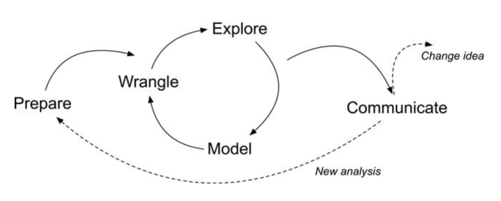
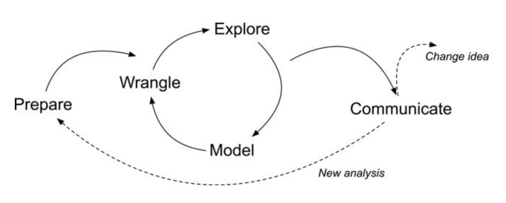
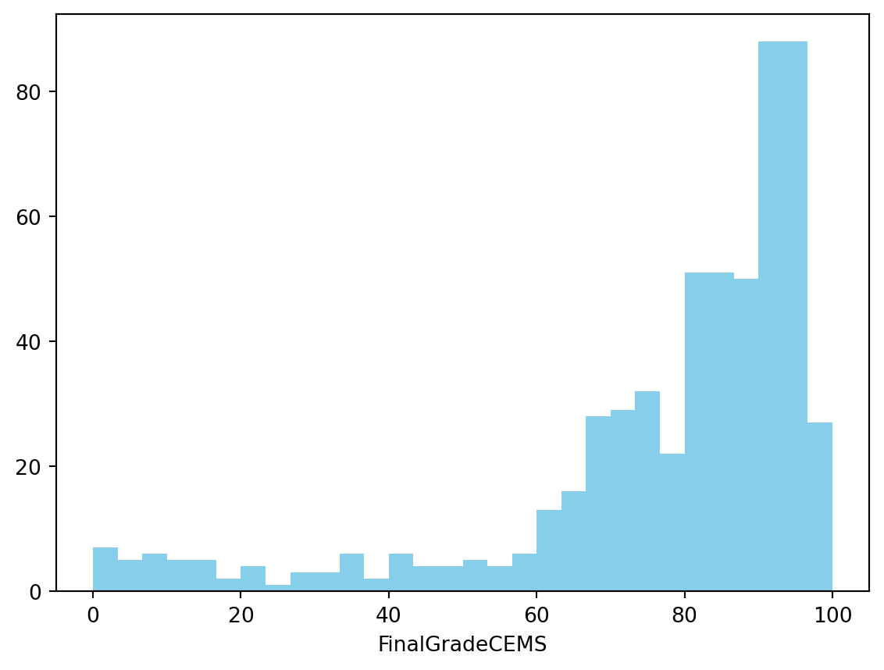
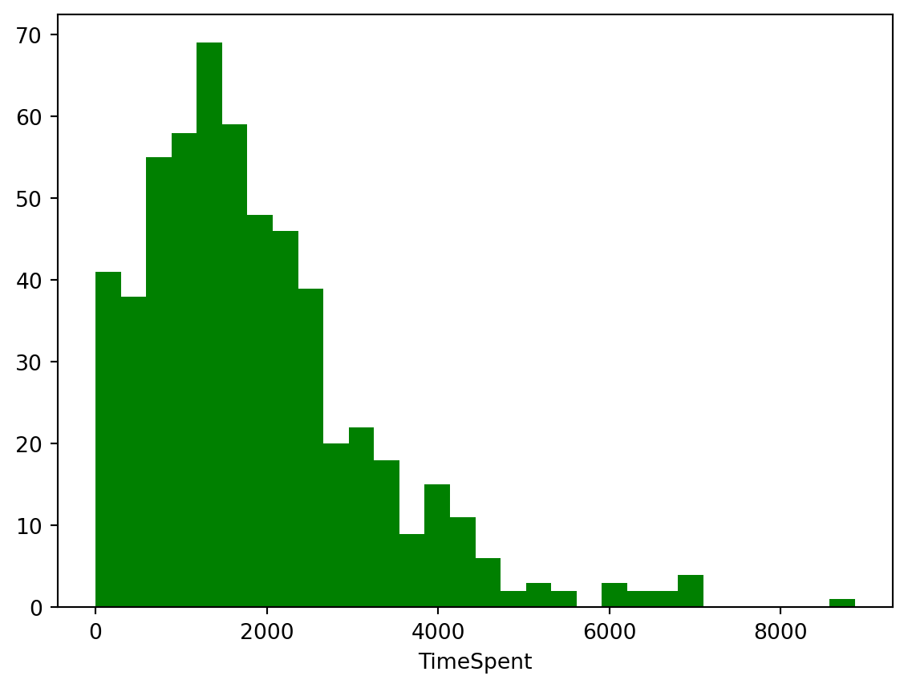

# Import the pyplot and image modules from the matplotlib library
import matplotlib.pyplot as plt
# Read and display an image from file
plt.imshow(plt.imread('img/laser-cycle.png'))
plt.axis('off') # Hide axes
plt.show()
LASER Orientation Module

Welcome to your first LASER Case Study! The case study activities included in each module demonstrate how key Learning Analytics (LA) techniques featured in exemplary STEM education research studies can be implemented with R or Python. Case studies also provide a holistic setting to explore important foundational topics integral to Learning Analytics such as reproducible research, use of APIs, and ethical use of educational data.
This orientation case study will also introduce you to Quarto, which is heavily integrated into each LASER Module. You may have used Quarto before - or you may not have! Either is fine as this task will be designed with the assumption that you have not used Quarto before.
What you are working in now is an Quarto markdown file as indicated by the .qmd file name extension. Quarto documents are fully reproducible and use a productive notebook interface to combine formatted text and “chunks” of code to produce a range of static and dynamic output formats including: HTML, PDF, Word, HTML5 slides, Tufte-style handouts, books, dashboards, shiny applications, scientific articles, websites, and more.
Quarto documents have handy Outline feature that allow you to easily navigate the entire document. If the outline is not currently visible, click the Outline button located on the right of the toolbar at the top of this document.
Following best practices for reproducible research (Gandrud 2021), Quarto files store information in plain text markdown syntax. You are currently viewing this Quarto document using the visual editor, The visual editor is set as the default view in the Quarto YAML header at the top of this document. Basically, a YAML header is:
a short blob of text that… not only dictates the final file format, but a style and feel for our final document.
The visual editor allows you to view formatted headers, text and code chunks and is a bit more “human readable” than markdown syntax but there will be many occasions where you will want to take a look at the plain text source code underlying this document. This can be viewed at any point by switching to source mode for editing. You can toggle back and forth between these two modes by clicking on Source and Visual in the editor toolbar.
You may have noticed a special kind of link in the text above. Specifically, a link citing Reproducible Research with R and R Studio by Chris Gandrud. The YAML header includes a bibliography option and points to our reference.bib file in the lit folder of this project, which produces a nice tooltip for linked references and a bibliography when our doc is rendered and published. Click the following link to learn more about citations in Quarto.
LASER case studies include many interactive elements in which you are asked to perform an action, answer some questions, or write some code. These are indicated by the 👉 Your Turn ⤵ header. Now it’s your turn to do something.
Take a look at the markdown syntax used to create this document by viewing with the source editor. To do so, click the “Source” button in the toolbar at the top of this file. After you’ve had a look, click back to the visual editor to continue.

Great job! Let’s continue!
In addition to including formatted text hyperlinks, and embedded images like above, Quarto documents can also include a specially formatted text box called a “code chunk.” These chunks allows you to run code from multiple languages including R, Python, and SQL. For example, the code chunk below is intended to run Python code as specified by “python” inside the curly brackets {}. It also contains a contains some code “comments” as indicted by the # hashtags and several lines of python code. You may have also noticed a set of buttons in the upper right corner of the code chunk which are used to execute the code.
Click the green arrow  icon on the right side of the code chunk to run the Python code and view the image file name
icon on the right side of the code chunk to run the Python code and view the image file name laser-cycle.png stored in the img folder in your files pane. Quarto will execute the code and its output and any related messages are displayed below the chunk.
# Import the pyplot and image modules from the matplotlib library
import matplotlib.pyplot as plt
# Read and display an image from file
plt.imshow(plt.imread('img/laser-cycle.png'))
plt.axis('off') # Hide axes
plt.show()
Nice work! For this case study, don’t stress too much about understanding the code. We’ll spend a lot of time doing that in the other modules. For now, take a look at the image displayed and answer the question that follows by typing your response directly in this document.
In LASER case studies, you will often see as part of “Your Turns” a ❓ icon that indicates you are being promoted to answer a question. Type your response to the following question by deleting “YOUR RESPONSE HERE” and adding your own response:
What do you think this image is intended to illustrate?
The diagram shown above illustrates a Learning Analytics framework called the Data-Intensive Research workflow and comes from the excellent book, Learning Analytics Goes to School (Krumm, Means, and Bienkowski 2018). You can check that out later, but don’t feel any need to dive deep into it for now - we spend more time unpacking this framework in our Learning Analytics Workflow Modules; just know that this case study and all of the case studies in our LASER curriculum modules are organized around the five main components of this workflow.
In this introductory coding case study, we’ll focus on the following tasks specific to each component of the workflow:
Now, let’s get started!
First and foremost, data-intensive research involves defining and refining a research question and developing an understanding of where your data comes from (Krumm, Means, and Bienkowski 2018). This part of the process also involves setting up a reproducible research environment so your work can be understood and replicated by other researchers (Gandrud 2021). For now, we’ll focus on just a few parts of this process, diving in much more deeply into these components in later learning modules.
In this case study, we’ll be working with data come from an unpublished research study by LASER team member, Josh Rosenberg, which utilized a number of different data sources to understand high school students’ motivation within the context of online courses.
These data sets and related research questions are explored in much greater detail in other modules, but for the purpose of this case study, our analysis will be driven by the following research question:
Is there a relationship between the time students spend on a course (as measured through their learning management system) and their final course grade?
As highlighted in Chapter 6 of Data Science in Education Using R (Estrellado et al. 2020), one of the first steps of every research workflow should be to set up a “Project” within RStudio.
A Project is the home for all of the files, images, reports, and code that are used in any given project.
We are working in Posit Cloud with an R project cloned from GitHub, so a project has already been set up for you as indicated by the .Rproj file in the main directory.
Locate the Files tab lower right hand window pane and see if you can find the file named laser-orientation.Rproj.
Since a project already set up for us, we will instead focus on loading the required packages we’ll need for analysis.
Packages, sometimes referred to as libraries, are shareable collections of R code that can contain functions, data, and/or documentation and extend the functionality of R.

One package that we’ll be using extensively is {pandas}. Pandas (McKinney 2010) is a powerful and flexible open source data analysis and wrangling tool for Python that is used widely by the data science community.

NumPy is a fundamental package for scientific computing with Python and includes a collection of mathematical algorithms and convenience functions. NumPy offers comprehensive mathematical functions, random number generators, linear algebra routines, Fourier transforms, and more.

Pyplot is a module in the {matplotlib) package, a comprehensive library for creating static, animated, and interactive visualizations in Python. pyplot provides a MATLAB-like interface for making plots and is particularly suited for interactive plotting and simple cases of programmatic plot generation.
The scikit-learn package
Click the arrow to execute your code in a cell below and load the required packages and functions for this case study.
import pandas as pd # for data wrangling
import numpy as np # for descriptive statistics
import matplotlib.pyplot as plt # for data visualization
from sklearn.linear_model import LinearRegression # for data modelingThe data we’ll explore in this case study were originally collected for a research study, which utilized a number of different data sources to understand students’ course-related motivation. These courses were designed and taught by instructors through a state-wide online course provider designed to supplement – but not replace – students’ enrollment in their local school.
The data used in this case study has already been “wrangled” quite a bit, but the original datasets included:
A self-report survey assessing three aspects of students’ motivation
Log-trace data, such as data output from the learning management system (LMS)
Discussion board data
Academic achievement data
To know more, see Chapter 7 of Data Science in Education Using R (Estrellado et al. 2020).
Next, we’ll load our data - specifically, a CSV (comma separated value) text file, the kind that you can export from Microsoft Excel or Google Sheets - into pandas, using the pd.read_csv() function in the next chunk.
#read sci-online-classes.csv to sci_data and display the output
sci_data = pd.read_csv("data/sci-online-classes.csv")Nice work! You should now see a new data “object” named sci_data saved in your Environment pane. Try clicking on it and see what happens!
It’s important to note that by manipulating data with pandas we do not change the original file. Instead, the data is stored in memory and can be viewed in our Environment pane, and can later be exported and saved as a new file is desired.
Now let’s learn another way to inspect our data.
Run the next chunk and look at the results of the data frame you “assigned” to the sci_data object in the previous code-chunk:
sci_data| student_id | course_id | total_points_possible | total_points_earned | percentage_earned | subject | semester | section | Gradebook_Item | Grade_Category | ... | q7 | q8 | q9 | q10 | TimeSpent | TimeSpent_hours | TimeSpent_std | int | pc | uv | |
|---|---|---|---|---|---|---|---|---|---|---|---|---|---|---|---|---|---|---|---|---|---|
| 0 | 43146 | FrScA-S216-02 | 3280 | 2220 | 0.676829 | FrScA | S216 | 2 | POINTS EARNED & TOTAL COURSE POINTS | NaN | ... | 5.0 | 5.0 | 4.0 | 5.0 | 1555.1667 | 25.919445 | -0.180515 | 5.0 | 4.5 | 4.333333 |
| 1 | 44638 | OcnA-S116-01 | 3531 | 2672 | 0.756726 | OcnA | S116 | 1 | ATTEMPTED | NaN | ... | 4.0 | 5.0 | 4.0 | 4.0 | 1382.7001 | 23.045002 | -0.307803 | 4.2 | 3.5 | 4.000000 |
| 2 | 47448 | FrScA-S216-01 | 2870 | 1897 | 0.660976 | FrScA | S216 | 1 | POINTS EARNED & TOTAL COURSE POINTS | NaN | ... | 4.0 | 5.0 | 3.0 | 5.0 | 860.4335 | 14.340558 | -0.693260 | 5.0 | 4.0 | 3.666667 |
| 3 | 47979 | OcnA-S216-01 | 4562 | 3090 | 0.677335 | OcnA | S216 | 1 | POINTS EARNED & TOTAL COURSE POINTS | NaN | ... | 4.0 | 5.0 | 5.0 | 5.0 | 1598.6166 | 26.643610 | -0.148447 | 5.0 | 3.5 | 5.000000 |
| 4 | 48797 | PhysA-S116-01 | 2207 | 1910 | 0.865428 | PhysA | S116 | 1 | POINTS EARNED & TOTAL COURSE POINTS | NaN | ... | 4.0 | 4.0 | NaN | 3.0 | 1481.8000 | 24.696667 | -0.234663 | 3.8 | 3.5 | 3.500000 |
| ... | ... | ... | ... | ... | ... | ... | ... | ... | ... | ... | ... | ... | ... | ... | ... | ... | ... | ... | ... | ... | ... |
| 598 | 97265 | PhysA-S216-01 | 3101 | 2078 | 0.670106 | PhysA | S216 | 1 | POINTS EARNED & TOTAL COURSE POINTS | NaN | ... | 4.0 | 4.0 | 4.0 | 4.0 | 817.4501 | 13.624168 | -0.724983 | 3.8 | 3.5 | 4.000000 |
| 599 | 97272 | OcnA-S216-01 | 2872 | 1733 | 0.603412 | OcnA | S216 | 1 | POINTS EARNED & TOTAL COURSE POINTS | NaN | ... | 3.0 | 5.0 | 5.0 | 3.0 | 1638.4500 | 27.307500 | -0.119048 | 4.4 | 3.0 | 5.000000 |
| 600 | 97374 | BioA-S216-01 | 8586 | 6978 | 0.812718 | BioA | S216 | 1 | POINTS EARNED & TOTAL COURSE POINTS | NaN | ... | NaN | NaN | NaN | NaN | 470.8000 | 7.846667 | -0.980827 | NaN | NaN | NaN |
| 601 | 97386 | BioA-S216-01 | 2761 | 1937 | 0.701557 | BioA | S216 | 1 | POINTS EARNED & TOTAL COURSE POINTS | NaN | ... | 3.0 | 4.0 | 3.0 | 3.0 | 71.0166 | 1.183610 | -1.275885 | 3.8 | 3.0 | 3.666667 |
| 602 | 97441 | FrScA-S216-02 | 2607 | 2205 | 0.845800 | FrScA | S216 | 2 | POINTS EARNED & TOTAL COURSE POINTS | NaN | ... | 5.0 | 5.0 | 2.0 | 4.0 | 208.6664 | 3.477773 | -1.174293 | 4.4 | 4.0 | 2.000000 |
603 rows × 30 columns
You can also enlarge this output by clicking the “Show in New Window” button located in the top right corner of the output.
What do you notice about this data set? What do you wonder? Add one or two observations in the space below:
Now, let’s examine our data a little more more systematically. The first step in getting to know your data is to discover the different data types it contains.
There are two general types of data:
Categorical data represent categories or groups that are distinct and separable. It usually consists of names, labels, or attributes and is represented by words or symbols.
Numerical data represents qualities that can be measured and represented as numbers.
One way to explore the data types is by using info() function. Complete the following code to take a look at the data types for each column in our sci_data data frame.
Hint: Type the name of the function after the name of the dataset, using . before and () after it.
sci_data.info()<class 'pandas.core.frame.DataFrame'>
RangeIndex: 603 entries, 0 to 602
Data columns (total 30 columns):
# Column Non-Null Count Dtype
--- ------ -------------- -----
0 student_id 603 non-null int64
1 course_id 603 non-null object
2 total_points_possible 603 non-null int64
3 total_points_earned 603 non-null int64
4 percentage_earned 603 non-null float64
5 subject 603 non-null object
6 semester 603 non-null object
7 section 603 non-null int64
8 Gradebook_Item 603 non-null object
9 Grade_Category 0 non-null float64
10 FinalGradeCEMS 573 non-null float64
11 Points_Possible 603 non-null int64
12 Points_Earned 511 non-null float64
13 Gender 603 non-null object
14 q1 480 non-null float64
15 q2 477 non-null float64
16 q3 480 non-null float64
17 q4 478 non-null float64
18 q5 476 non-null float64
19 q6 476 non-null float64
20 q7 474 non-null float64
21 q8 474 non-null float64
22 q9 474 non-null float64
23 q10 474 non-null float64
24 TimeSpent 598 non-null float64
25 TimeSpent_hours 598 non-null float64
26 TimeSpent_std 598 non-null float64
27 int 527 non-null float64
28 pc 528 non-null float64
29 uv 528 non-null float64
dtypes: float64(20), int64(5), object(5)
memory usage: 141.5+ KBNice work!!
Which of the columns in our dataset contain categorical and which contain numerical data? Name a few.
Which data types do you see? Which ones are numerical and which are categorical? Name a few.
If you look at “Grade_category”, you will notice that all values are NaNs or missing values which means we do not have any information about this variable (or parameter).
What other columns do you think have missing values? Why do you think so?
By wrangle, we refer to the process of cleaning and processing data, and, in some cases, merging (or joining) data from multiple sources. Often, this part of the process is very (surprisingly) time-intensive! Wrangling your data into shape can itself be an important accomplishment!
Recall from our Prepare section that we are interested the relationship between the time students spend on a course and their final course grade.
Run the following code chunk using sci_data[[]] and the names of the columns:
FinalGradeCEMS (i.e., students’ final grades on a 0-100 point scale)
TimeSpent (i.e., the number of minutes they spent in the course’s learning management system)
sci_data[['FinalGradeCEMS','TimeSpent']]| FinalGradeCEMS | TimeSpent | |
|---|---|---|
| 0 | 93.453725 | 1555.1667 |
| 1 | 81.701843 | 1382.7001 |
| 2 | 88.487585 | 860.4335 |
| 3 | 81.852596 | 1598.6166 |
| 4 | 84.000000 | 1481.8000 |
| ... | ... | ... |
| 598 | 84.569444 | 817.4501 |
| 599 | 84.239532 | 1638.4500 |
| 600 | 12.352941 | 470.8000 |
| 601 | 54.158289 | 71.0166 |
| 602 | 23.137698 | 208.6664 |
603 rows × 2 columns
We have already seen that there are missing values in our target columns. There is another way to do that by selecting the column and usung .isnull() function and adding .sum() function in the end to find the number of those values.
sci_data.isnull().sum()student_id 0
course_id 0
total_points_possible 0
total_points_earned 0
percentage_earned 0
subject 0
semester 0
section 0
Gradebook_Item 0
Grade_Category 603
FinalGradeCEMS 30
Points_Possible 0
Points_Earned 92
Gender 0
q1 123
q2 126
q3 123
q4 125
q5 127
q6 127
q7 129
q8 129
q9 129
q10 129
TimeSpent 5
TimeSpent_hours 5
TimeSpent_std 5
int 76
pc 75
uv 75
dtype: int64There are several conventional ways to deal with the missing values.
We can drop those values and not use the entire row in which this element is missing.
We can substitute missing values with the column mean if the variance within a row is not very big.
Below are the code chunks to execute both ways. Choose one you think is more appropriate as executing one excludes the use of the other and you will add changes to the dataset.
#drop missing values
sci_data = sci_data.dropna(subset = ['FinalGradeCEMS','TimeSpent'])
sci_data.info()<class 'pandas.core.frame.DataFrame'>
Index: 573 entries, 0 to 602
Data columns (total 30 columns):
# Column Non-Null Count Dtype
--- ------ -------------- -----
0 student_id 573 non-null int64
1 course_id 573 non-null object
2 total_points_possible 573 non-null int64
3 total_points_earned 573 non-null int64
4 percentage_earned 573 non-null float64
5 subject 573 non-null object
6 semester 573 non-null object
7 section 573 non-null int64
8 Gradebook_Item 573 non-null object
9 Grade_Category 0 non-null float64
10 FinalGradeCEMS 573 non-null float64
11 Points_Possible 573 non-null int64
12 Points_Earned 486 non-null float64
13 Gender 573 non-null object
14 q1 465 non-null float64
15 q2 462 non-null float64
16 q3 465 non-null float64
17 q4 463 non-null float64
18 q5 461 non-null float64
19 q6 461 non-null float64
20 q7 459 non-null float64
21 q8 460 non-null float64
22 q9 459 non-null float64
23 q10 460 non-null float64
24 TimeSpent 573 non-null float64
25 TimeSpent_hours 573 non-null float64
26 TimeSpent_std 573 non-null float64
27 int 503 non-null float64
28 pc 504 non-null float64
29 uv 504 non-null float64
dtypes: float64(20), int64(5), object(5)
memory usage: 138.8+ KB#substitute missing values with column means
mean_value_grade=sci_data['FinalGradeCEMS'].mean()
mean_value_time=sci_data['TimeSpent'].mean()
sci_data['FinalGradeCEMS'].fillna(value=mean_value_grade, inplace=True)
sci_data['TimeSpent'].fillna(value=mean_value_time, inplace=True)/var/folders/n_/y03lvw5130b2ct_8v03d6r840000gq/T/ipykernel_80275/3740110450.py:5: FutureWarning: A value is trying to be set on a copy of a DataFrame or Series through chained assignment using an inplace method.
The behavior will change in pandas 3.0. This inplace method will never work because the intermediate object on which we are setting values always behaves as a copy.
For example, when doing 'df[col].method(value, inplace=True)', try using 'df.method({col: value}, inplace=True)' or df[col] = df[col].method(value) instead, to perform the operation inplace on the original object.
sci_data['FinalGradeCEMS'].fillna(value=mean_value_grade, inplace=True)
/var/folders/n_/y03lvw5130b2ct_8v03d6r840000gq/T/ipykernel_80275/3740110450.py:5: SettingWithCopyWarning:
A value is trying to be set on a copy of a slice from a DataFrame
See the caveats in the documentation: https://pandas.pydata.org/pandas-docs/stable/user_guide/indexing.html#returning-a-view-versus-a-copy
sci_data['FinalGradeCEMS'].fillna(value=mean_value_grade, inplace=True)
/var/folders/n_/y03lvw5130b2ct_8v03d6r840000gq/T/ipykernel_80275/3740110450.py:6: FutureWarning: A value is trying to be set on a copy of a DataFrame or Series through chained assignment using an inplace method.
The behavior will change in pandas 3.0. This inplace method will never work because the intermediate object on which we are setting values always behaves as a copy.
For example, when doing 'df[col].method(value, inplace=True)', try using 'df.method({col: value}, inplace=True)' or df[col] = df[col].method(value) instead, to perform the operation inplace on the original object.
sci_data['TimeSpent'].fillna(value=mean_value_time, inplace=True)
/var/folders/n_/y03lvw5130b2ct_8v03d6r840000gq/T/ipykernel_80275/3740110450.py:6: SettingWithCopyWarning:
A value is trying to be set on a copy of a slice from a DataFrame
See the caveats in the documentation: https://pandas.pydata.org/pandas-docs/stable/user_guide/indexing.html#returning-a-view-versus-a-copy
sci_data['TimeSpent'].fillna(value=mean_value_time, inplace=True)Next, let’s explore filtering variables. Check out and run the next chunk of code, imagining that we wish to filter our data to view only the rows associated with students who earned a final grade (as a percentage) of 70% - or higher and the ‘TimeSpent’ associated with it.
sci_data['TimeSpent'][sci_data['FinalGradeCEMS']>70]0 1555.1667
1 1382.7001
2 860.4335
3 1598.6166
4 1481.8000
...
592 244.3835
593 2264.4834
595 2676.7501
598 817.4501
599 1638.4500
Name: TimeSpent, Length: 438, dtype: float64❓ How much time do you need to spend to get the grade higher than 70%? Is there a consistent pattern?
Exploratory data analysis, or exploring your data, involves processes of describing your data (such as by calculating the means and standard deviations of numeric variables, or counting the frequency of categorical variables) and, often, visualizing your data. As we’ll learn in later labs, the explore phase can also involve the process of “feature engineering,” or creating new variables within a dataset [@krumm2018].
In this section, we’ll quickly pull together some basic stats and introduce you to a basic data visualization.
Let’s repurpose what we learned from our wrangle section to select just a few variables and quickly gather some descriptive statistics to see where the data is centered, its values to identify trends by using .describe() method.
sci_data.describe()| student_id | total_points_possible | total_points_earned | percentage_earned | section | Grade_Category | FinalGradeCEMS | Points_Possible | Points_Earned | q1 | ... | q7 | q8 | q9 | q10 | TimeSpent | TimeSpent_hours | TimeSpent_std | int | pc | uv | |
|---|---|---|---|---|---|---|---|---|---|---|---|---|---|---|---|---|---|---|---|---|---|
| count | 573.000000 | 573.000000 | 573.000000 | 573.000000 | 573.000000 | 0.0 | 573.000000 | 573.000000 | 486.000000 | 465.000000 | ... | 459.000000 | 460.000000 | 459.000000 | 460.000000 | 573.000000 | 573.000000 | 573.000000 | 503.000000 | 504.000000 | 504.000000 |
| mean | 86231.424084 | 4303.863874 | 3267.818499 | 0.758350 | 1.364747 | NaN | 77.202655 | 78.235602 | 69.417905 | 4.290323 | ... | 3.910675 | 4.284783 | 3.492375 | 4.104348 | 1873.849317 | 31.230822 | 0.054687 | 4.215540 | 3.603009 | 3.730974 |
| std | 10392.690030 | 2305.719003 | 1824.242324 | 0.089552 | 0.675195 | NaN | 22.225076 | 169.019143 | 145.754144 | 0.685135 | ... | 0.821833 | 0.688678 | 0.985399 | 0.937004 | 1335.608192 | 22.260137 | 0.985739 | 0.595033 | 0.644908 | 0.703211 |
| min | 43146.000000 | 840.000000 | 672.000000 | 0.466447 | 1.000000 | NaN | 0.000000 | 5.000000 | 0.000000 | 1.000000 | ... | 1.000000 | 1.000000 | 1.000000 | 1.000000 | 0.700000 | 0.011667 | -1.327782 | 2.000000 | 1.500000 | 1.000000 |
| 25% | 85644.000000 | 2832.000000 | 2059.000000 | 0.704907 | 1.000000 | NaN | 71.251142 | 10.000000 | 7.600000 | 4.000000 | ... | 3.000000 | 4.000000 | 3.000000 | 4.000000 | 943.066900 | 15.717782 | -0.632272 | 3.900000 | 3.000000 | 3.333333 |
| 50% | 88340.000000 | 3641.000000 | 2777.000000 | 0.776543 | 1.000000 | NaN | 84.569444 | 10.000000 | 10.000000 | 4.000000 | ... | 4.000000 | 4.000000 | 4.000000 | 4.000000 | 1598.616600 | 26.643610 | -0.148447 | 4.200000 | 3.500000 | 3.791667 |
| 75% | 92733.000000 | 5083.000000 | 3882.000000 | 0.826181 | 2.000000 | NaN | 92.099323 | 30.000000 | 26.535000 | 5.000000 | ... | 4.500000 | 5.000000 | 4.000000 | 5.000000 | 2454.333200 | 40.905553 | 0.483111 | 4.700000 | 4.000000 | 4.166667 |
| max | 97441.000000 | 15552.000000 | 12208.000000 | 0.910640 | 4.000000 | NaN | 100.000000 | 935.000000 | 828.200000 | 5.000000 | ... | 5.000000 | 5.000000 | 5.000000 | 5.000000 | 8870.883300 | 147.848055 | 5.218815 | 5.000000 | 5.000000 | 5.000000 |
8 rows × 25 columns
❓ What do you notice about this dataset? Which columns are most important for our research question? What do you wonder?
Data visualization is an extremely common practice in Learning Analytics, especially in the use of data dashboards. Data visualization involves graphically representing one or more variables with the goal of discovering patterns in data. These patterns may help us to answer research questions or generate new questions about our data, to discover relationships between and among variables, and to create or select features for data modeling.
At it’s core, you can create some very simple but attractive graphs with just a couple lines of code. Matplotlib follows the common workflow for making graphs. To make a graph, you simply:
Start the graph with plt and include type of graph `.hist()’in our case, and add the data as an argument;
“Add” elements to the graph using the bins =, or changing the color;
Select variables to graph on each axis with the xlabel() argument.
Let’s give it a try by creating a simple histogram of our FinalGradeCEMS variable. The code below creates a histogram, or a distribution of the values, in this case for students’ final grades. Go ahead and run it:
plt.hist(sci_data['FinalGradeCEMS'], bins = 30, color ="skyblue")
plt.xlabel('FinalGradeCEMS')
plt.show()
Now use the code chunk below to visualize the distribution of another variable in the data, specifically TimeSpent. You can do so by swapping out the variable FinalGradeCEMS with our new variable. Also, change the color to one of your choosing; consider this list of valid color names here: https://matplotlib.org/stable/gallery/color/named_colors.html
Tip: There is no shame in copying and pasting code from above. Remember, reproducible research is also intended to help you save time!
#Your code goes here:Finally, let’s create a scatter plot for the relationship between these two variables. Scatterplots are most useful for displaying the relationship between two continuous variables. Change type of graph by typing .scatter(). You can also choose the size of the marker and color.
Complete the code chunk below to create a simple scatterplot with TimeSpent on the x axis and FinalGradeCEMS on the y axis.
plt.scatter(x = sci_data['TimeSpent'], y = sci_data['FinalGradeCEMS'], marker=".", color = '#88c999')
plt.xlabel('TimeSpent')
plt.ylabel('FinalGradeCEMS')
plt.show()
Well done! As you can see, there appears to be a positive relationship between the time students spend in the online course and their final grade!
“Model” is one of those terms that has many different meanings. For our purpose, we refer to the process of simplifying and summarizing our data. Thus, models can take many forms; calculating means represents a legitimate form of modeling data, as does estimating more complex models, including linear regressions, and models and algorithms associated with machine learning tasks. For now, we’ll run a base linear regression model to further examine the relationship between TimeSpent and FinalGradeCEMS.
We’ll dive much deeper into modeling in subsequent learning labs, but for now let’s see if there is a statistically significant relationship between students’ final grades, FinaGradeCEMS, and the TimeSpent on the course.
We need to do some transformations of our two parameters before we can run the model, in our case it is linear regression. We encode the data from the two columns FinaGradeCEMS and TimeSpent into the format our scikit-learn linear regression model could understand.
*Note that on the y-axis we put a dependent variable, the one we want to predict and x-axis is for and independent, or exploratory variable.
We then train (or fit) or model to the data we selected to find a line of best fit.
We also added the code to visualize our prediction in the scatter plot and changed its color to understand better what is being predicted.
#dependent variable is what you want to predict - y axis; independent(exploratory) variable
X = np.array(sci_data['TimeSpent']).reshape(-1, 1)
y = np.array(sci_data['FinalGradeCEMS']).reshape(-1, 1)
reg = LinearRegression().fit(X, y)
plt.scatter(X, y, marker=".", color = '#88c999')
plt.plot(X, reg.predict(X),color='hotpink')
plt.xlabel('TimeSpent')
plt.ylabel('FinalGradeCEMS')
plt.show()
We can now use our model to predict the grade depending on the time spent studying.
# Assuming 'new_data' is a Pandas DataFrame with a 'TimeSpent' column for prediction
new_data = pd.DataFrame({'TimeSpent': [10, 15, 20]})
# Extracting the 'TimeSpent' values from 'new_data'
X_new = np.array(new_data['TimeSpent']).reshape(-1, 1)
# Use the predict method to obtain predictions
predicted_grades = reg.predict(X_new)
# Print the predicted grades
print(predicted_grades)[[65.86931552]
[65.89971856]
[65.93012161]]print(reg.predict([[4000]]))[[90.13094602]]Change the number of time a student is spending and see how the predicted grade changes.
❓How much time do you need to spend studying to get an A?
#print(reg.predict([['YOUR CODE HERE']]))We can also add another variable to our model to see how it would influence the prediction.
*Note, in Python you can only add numerical data values to your models, so be careful when choosing.
There are ways to transform your categorical values into numerical that we will introduce later in the course.
Run the cells below to train the model and compare its prediction to the previous one.
X = np.array(sci_data['TimeSpent'],sci_data['section']).reshape(-1, 1)
y = np.array(sci_data['FinalGradeCEMS']).reshape(-1, 1)
reg_2 = LinearRegression().fit(X, y)reg_2.predict([[4000]])array([[90.13362775]])As we can see the predicted grade is a bit better with the two parameters.
Compare the two model predictions by altering the time spent studying.
Change the variable section to another one that you think might be related to the final grade.
#X = np.array(sci_data['TimeSpent'],sci_data['YOUR CODE HERE']).reshape(-1, 1)
#y = np.array(sci_data['FinalGradeCEMS']).reshape(-1, 1)
#reg_3 = LinearRegression().fit(X, y)#reg_3.predict([['YOUR CODE HERE']])The final step in the workflow/process is sharing the results of your analysis with wider audience. Krumm et al. @krumm2018 have outlined the following 3-step process for communicating with education stakeholders findings from an analysis:
Select. Communicating what one has learned involves selecting among those analyses that are most important and most useful to an intended audience, as well as selecting a form for displaying that information, such as a graph or table in static or interactive form, i.e. a “data product.”
Polish. After creating initial versions of data products, research teams often spend time refining or polishing them, by adding or editing titles, labels, and notations and by working with colors and shapes to highlight key points.
Narrate. Writing a narrative to accompany the data products involves, at a minimum, pairing a data product with its related research question, describing how best to interpret the data product, and explaining the ways in which the data product helps answer the research question and might be used to inform new analyses or a “change idea” for improving student learning.
In later Learning Labs, you will have an opportunity to create a simple “data product” designed to illustrate some insights gained from your analysis and ideally highlight an action step or change idea that can be used to improve learning or the contexts in which learning occurs.
For now, we will wrap up this case study by converting our work into a webpage that can be used to communicate your learning and demonstrate some of your new Python skills.